國立中央大學 電子計算機中心 WSUS服務說明
一. 簡介
二. 一般使用者(Windows XP)設定
三. 一般使用者(Windows Vista)設定
四. 多台電腦下作群組設定
五. 問題：計中提供哪些微軟產品的自動更新服務
六. 問題：已經設定好到WSUS伺服器連結，但是無法更新
WSUS (Windows Server Updateing Service) 為一協助使用者進行Windows安全性更新的服務；目前計中提供的WSUS服務，可協助使用者從學校取得Windows XP、Vista、2000等作業系統，以及Office系列等微軟產品的自動更新 (五)；而不需連外至Windows Update網站進行。必須注意的是，WSUS的運作模式必須在您開啟自動更新的情況下進行。也就是說，當您點擊開始內的Windows Update，您的電腦依然會連到微軟官方網站取得檔案；WSUS僅允許使用者使用自動更新的方式進行運作。更新時，您必須取得管理員權限；也就是說，您在您電腦所登入的帳號必須可以對您的電腦進行軟體修改、安裝、移除...等。這份說明文件會為您說明如何設定將自動更新伺服器指向學校所提供的伺服器。
使用計中提供的WSUS服務前，需確認作業系統版本有支援WSUS；目前計中Portal入口所提供的Windows作業系統均有支援，如果您的電腦作業系統為廠商代為安裝，請確認使用WSUS之前，您的作業系統必須符合以下任意一項：
請注意：計中的WSUS伺服器僅提供中文、英文兩種版本的更新。
計中所提供的WSUS自動更新伺服器位置：http://wsus.ncu.edu.tw
1. 請用滑鼠點擊「開始」>> 「執行」，輸入gpedit.msc後，按下「確定」
2. 請在左側欄位的「電腦設定」下，找到「系統管理範本」資料夾，按下滑鼠右鍵，選擇「新增/移除範本」
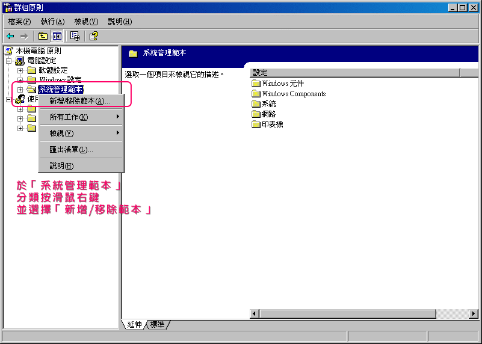
3. 此時會跳出一個小視窗，如果您在下列畫面沒有看到如圖圈選的wuau，請按下右下角的「新增」
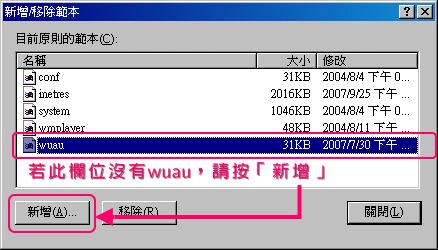
4. 找到資料夾內的「wuau.adm」後，按下「開啟」後，按下「關閉」
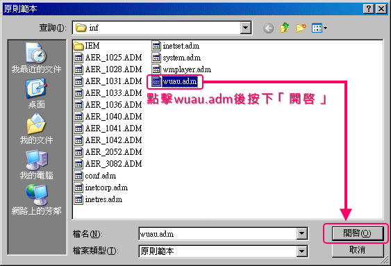
5. 請進入左側欄位的「系統管理範本」>> 「Windows 元件」>> 「Windows Update」
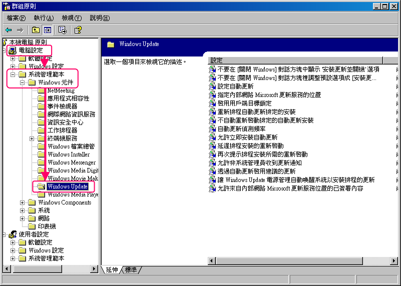
6. 此時右方欄位會顯現出對應的選項，請用滑鼠左鍵雙擊「指定近端內部網路Microsoft更新服務的位置」
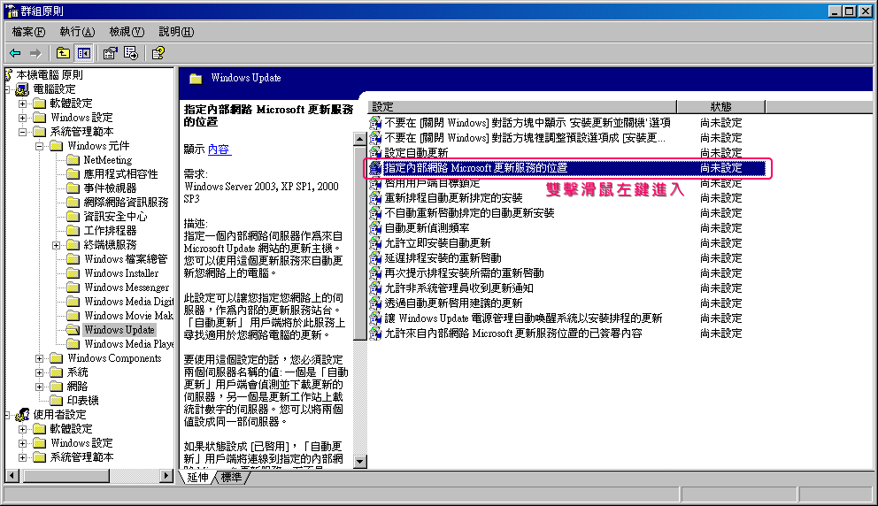
7. 請勾選「已啟用」選項，並在「設定偵測更新的近端內部網路更新服務」
以及「設定近端內部網路統計伺服器」兩個欄位內，都填入 http://wsus.ncu.edu.tw
完成後，點擊「確定」即可
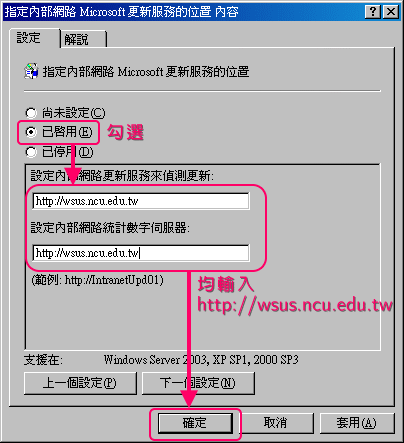
8. 若日後需要自行至微軟網站更新，而不使用計中所提供的WSUS服務時，請執行步驟7，改勾選為「未啟用」即可恢復預設值
1. 請用滑鼠點擊「開始」>> 「執行」，輸入gpedit.msc後，按下「確定」
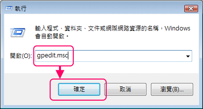
2. 此時會跳出「使用者帳戶控制」視窗，要求您提供管理員權限；請按「確定」即可
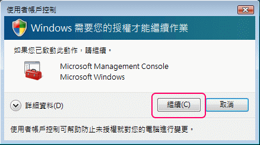
3. 請在左側欄位的「電腦設定」下，找到「系統管理範本」資料夾，再依序進入左側欄位
「系統管理範本」>> 「Windows 元件」>> 「Windows Update」
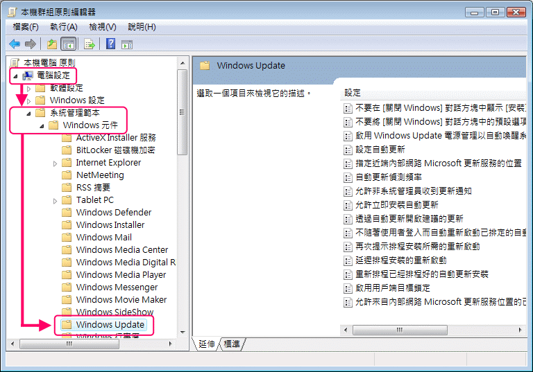
4. 此時右方欄位會顯現出對應的選項，請用滑鼠左鍵雙擊「指定近端內部網路Microsoft更新服務的位置」

5. 請勾選「已啟用」選項，並在「設定偵測更新的近端內部網路更新服務」
以及「設定近端內部網路統計伺服器」兩個欄位內，都填入 http://wsus.ncu.edu.tw
完成後，點擊「確定」即可
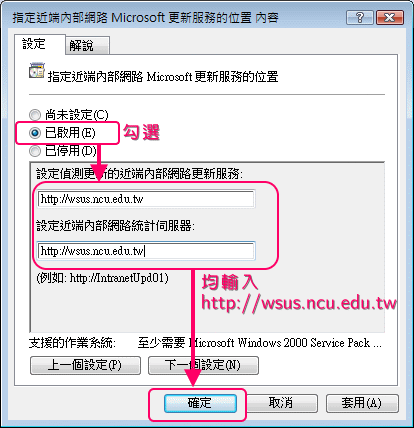
6. 若日後需要自行至微軟網站更新，而不使用計中所提供的WSUS服務時
請執行步驟5，改勾選為「未啟用」即可恢復預設值
1. 不論為Windows XP或Windows Vista，您必須先將其中一台電腦依照上述「二」或「三」做好設定
2. 請在設定好的電腦，用滑鼠點擊「開始」>>「執行」，輸入「regedit」後，按下「確定」
3. 請在左邊尋找「HKEY_LOCAL_MACHINE\SOFTWARE\Policies\Microsoft\Windows\WindowsUpdate」
並在此分類下按滑鼠右鍵，選擇「匯出」
4. 請將此一設定檔在其餘需要設定的電腦雙擊滑鼠左鍵登錄後即可使用
1. Windows (作業系統部份)：
2. Windows附加軟體部份
3. Office部份
4. 其他部份
一般而言，只要電腦經過適當設定，且網路連線上沒有問題時，WSUS服務應均可正常使用。需要注意的是，設定好之後系統預設不會立即生效；WSUS的生效時間約會在20分鐘以內將您的電腦登錄至伺服器。如果您需要讓您的電腦自動更新設定立即生效，您可以在命令提示字元輸入gpupdate /force進行強迫檢查。
需注意的是，WSUS服務在Windows XP作業系統上僅適用於自動更新，故您必須將電腦的自動更新設定為開啟，電腦才會自動連線至伺服器檢查。如果您使用開始功能表內的Windows Update，依然會連線至微軟網站進行更新動作；而Windows Vista作業系統下，自動更新預設自WSUS伺服器檢查並下載；手動進行Windows Update則可選擇自WSUS伺服器或微軟網站。
如果依然無法連線至WSUS進行更新，您可以先下載WSUS用戶端檢測工具，檢測您的設定是否正確。正常的情況之下，最下方的三個檢測項目(UseWuServer is enabled、Connection to server、SelfUpdate folder is present)均必須為PASS，且WUServer及WUStatusServer必須指向到http://wsus.ncu.edu.tw，您的電腦方可正常進行自動更新。
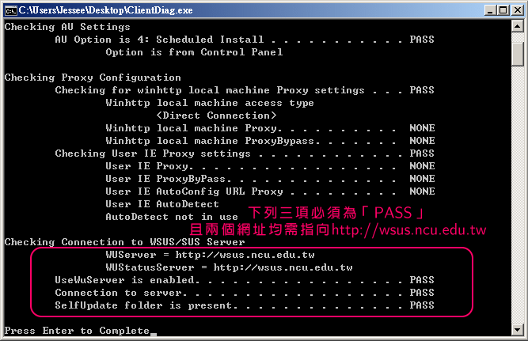